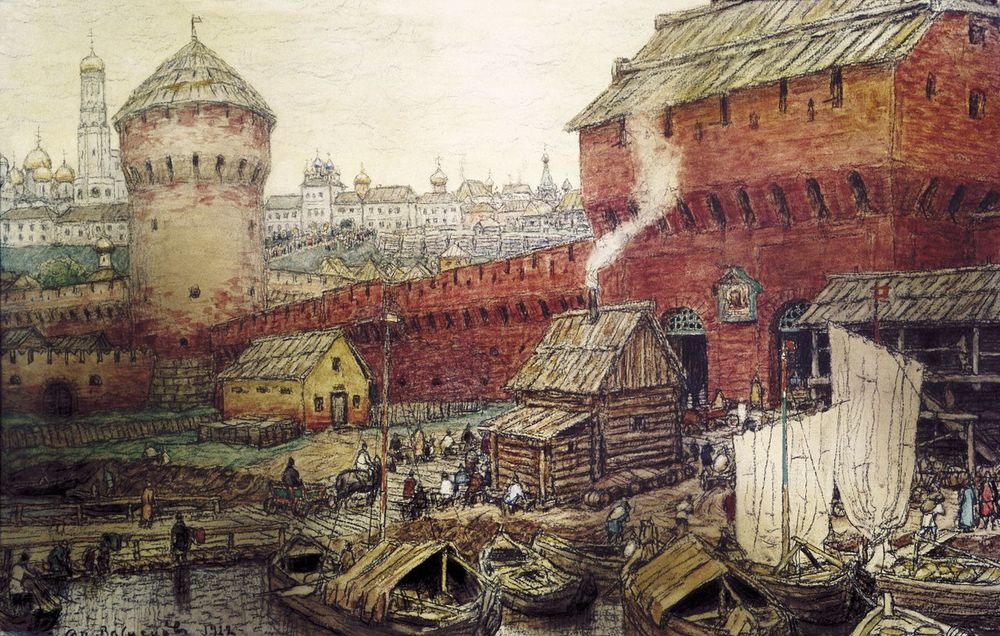

Москва
Москва́ — столица России, город федерального значения, административный центр Центрального федерального
округа и центр Московской области. Это крупнейший по численности населения город России с населением около
13,1 миллиона человек, что делает её 22-м по величине городом мира. Москва также является центром Московской
городской агломерации и самым крупным городом Европы по площади и населению.
Археологические данные показывают, что на месте будущего Кремля городское поселение существовало с XI века.
Первое письменное упоминание о Москве датируется 1147 годом. Город был столицей Великого княжества
Московского, Русского царства, Российской империи, Советской России и СССР. В Москве располагаются
федеральные органы власти, посольства и штаб-квартиры крупных коммерческих организаций.
Город расположен на западе России, на реке Москве, в междуречье Оки и Волги. Как субъект федерации, Москва
граничит с Московской и Калужской областями. В её состав входят 6 городских населённых пунктов, в том числе
4 города и 2 посёлка городского типа.
Москва — известный туристический центр. Московский Кремль, Красная площадь, Новодевичий монастырь и Церковь
Вознесения в Коломенском включены в список объектов всемирного наследия ЮНЕСКО. Город является важным
транспортным узлом с 6 аэропортами, 10 железнодорожными вокзалами и 3 речными портами. С 1935 года в Москве
функционирует метрополитен. Также город стал хозяином XXII летних Олимпийских игр в 1980 году и чемпионата
мира по футболу в 2018 году.
Москва занимает 31-е место в рейтинге научно-технологических кластеров мира
Пекин
Пекин — столица Китая и один из самых густонаселенных городов в мире. На 17,8 тысячах квадратных километрах
удивительным образом умудряется жить свыше 22 миллионов человек. Будьте готовы к тому, что в общественных
местах вас постоянно будут задевать и толкать прохожие, пекинцы не особо вежливы. Город активно строится и
развивается. Экономика от этого расцветает, а вот экология очень страдает. Пекин постоянно находится во власти
смога. Многие жители города ходят в масках и даже респираторах. Средства защиты стали обычной частью
гардероба. Их подбирают по цвету к одежде, а модницы украшают рюшами и пайетками.
Качество воды в городе также оставляет желать лучшего, поэтому не рискуйте пить некипяченую воду из-под крана.
Несмотря на все проблемы города, Пекин ежегодно посещает несколько миллионов туристов. Ведь здесь удивительным
образом соседствуют современность и старинная восточная культура, атеистический коммунизм и буддистские храмы.
Бешеный темп мегаполиса не мешает пекинцам каждое утро начинать рабочий день с линейки и выкрикивания
лозунгов, а вечер проводить в парке, занимаясь любимыми для пекинцев распеванием песен и танцами. Добраться до
Пекина из Москвы можно самолетом и поездом. В первом случае дорога займет 6 часов, во втором — 6 суток.
Город находится во власти так называемого умеренного муссонного климата. Для него характеры теплое дождливое
лето и ветреная зима (часто совсем без снега). Средняя температура зимних месяцев около — 5-10 градусов по
Цельсию.
Осадки очень редки. Летом воздух прогревается в среднем до 26 градусов.
75% всех осадков выпадает в виде дождя именно в период с июня по сентябрь. Лучше всего отправляться в Пекин
ранней осенью. В городе в это время не очень жарко и дожди маловероятны.
Пекин второй по величине город мира и столица Китайской Народной Республики. В городе гармонично сливается
и сосуществует древняя культура и современная цивилизация. Здесь хранятся 7 объектов Всемирного Наследия ЮНЕСКО.
И более 57 млн туристов ежегодно хотят увидеть насладиться красивой природой и ознакомиться с современной жизнью китайской столицы.